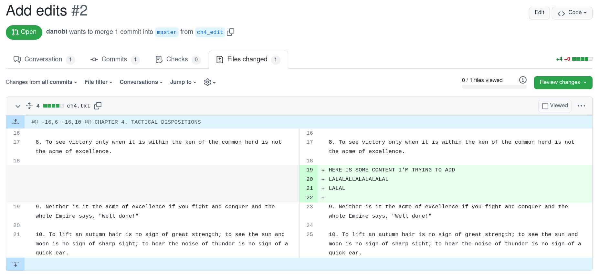
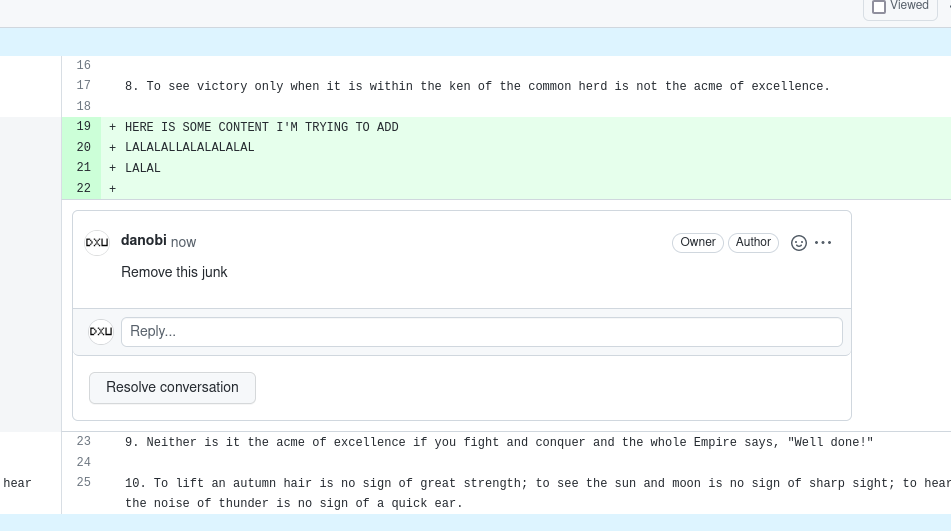

Last month I developed a new tool that brings mailing-list style code reviews to github. The tool was born out of frustration with github’s point and click web UI. Since I do a lot of code review, the tabbing between my text editor and my browser became a constant source of friction.
Ideally, I wanted to stay in my text editor so that my code writing and code reviewing workflows could be unified. I didn’t find any such tool on the internet so I built my own.
Consider the following pull request:

To download the PR for review:
$ prr get danobi/prr-test-repo/2
/home/dxu/dev/review/danobi/prr-test-repo/2.prrWhen you open the review file, you’ll see:
> diff --git a/ch4.txt b/ch4.txt
> index 41e1932..8741175 100644
> --- a/ch4.txt
> +++ b/ch4.txt
> @@ -16,6 +16,10 @@ CHAPTER 4. TACTICAL DISPOSITIONS
>
> 8. To see victory only when it is within the ken of the common herd is not the acme of excellence.
>
> +HERE IS SOME CONTENT I'M TRYING TO ADD
> +LALALALLALALALALAL
> +LALAL
> +
> 9. Neither is it the acme of excellence if you fight and conquer and the whole Empire says, "Well done!"
>
> 10. To lift an autumn hair is no sign of great strength; to see the sun and moon is no sign of sharp sight; to hear the noise of thunder is no sign of a quick ear.Now suppose you want to have the author remove the extraneous edits and reject the PR because of it. Simply mark up the review file as follows:
@prr reject
> diff --git a/ch4.txt b/ch4.txt
> index 41e1932..8741175 100644
> --- a/ch4.txt
> +++ b/ch4.txt
> @@ -16,6 +16,10 @@ CHAPTER 4. TACTICAL DISPOSITIONS
>
> 8. To see victory only when it is within the ken of the common herd is not the acme of excellence.
>
> +HERE IS SOME CONTENT I'M TRYING TO ADD
> +LALALALLALALALALAL
> +LALAL
> +
Remove this junk
> 9. Neither is it the acme of excellence if you fight and conquer and the whole Empire says, "Well done!"
>
> 10. To lift an autumn hair is no sign of great strength; to see the sun and moon is no sign of sharp sight; to hear the noise of thunder is no sign of a quick ear.Two things to note:
prr directives by “tagging”
@prr. Just like how you might use a github bot.To submit the review back to github, run:
$ prr submit danobi/prr-test-repo/2You’ll now see something like this on github:

(Note that you don’t see the “Changes requested” in this example because github doesn’t let you request changes on your own PR. It should work on a real PR.)
The above demo shows off most of the features I’ve currently
implemented. There’s still a few things I want to add but they’re not
too pressing as I’m currently using prr every day just
fine.
If you wanna try out prr or request new features, feel
free to file an issue or open a PR at https://github.com/danobi/prr
.